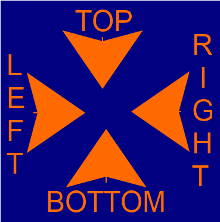

Границы элемента в потоке не сохраняются.
Элемент приподнимается над потоком и может перемещаться с помощью
свойств.
Элементы имеют margin, но margin-collaps не действует
Начало отсчета
Направление

если не заданы top, right, bottom или
left, то элементы занимают верхний левый угол контентной
области родителя.
от сторон ближайшего предка с
positionотличным от
static
если таких предков нет, то отсчет ведется от body
Блоки со свойством absolute. Для блока с красным фоном можно
задать top, right, bottom или
left. Блок с зеленым фоном со свойством absolute,
но без заданных top, right, bottom и left.
Размер блока в относительных единицах зависит от контекста (от размеров ближайшего relative элемента)